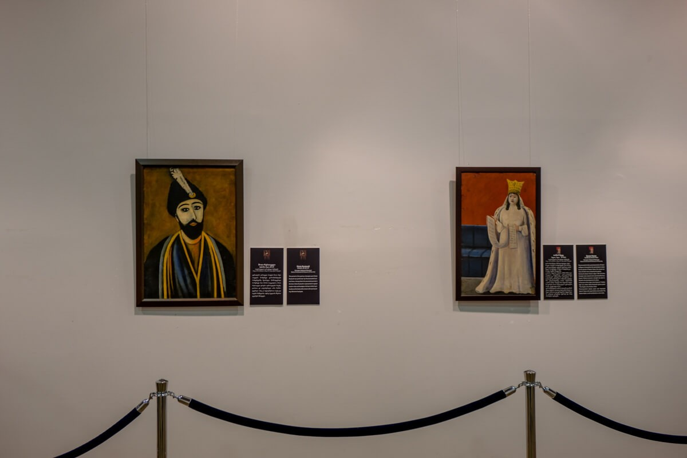
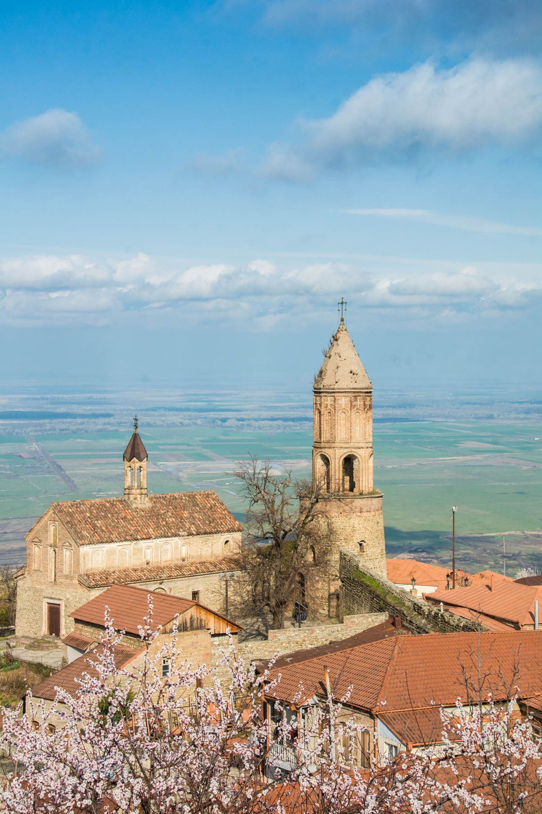

ქალაქს განაგებდა ქიზიყის მოურავი. 1770 წლის აღწერით სიღნაღში 100 კომლი ვაჭარ-ხელოსანი ცხოვრობდა. XVIII საუკუნის ბოლოს სიღნაღის ეკონომიკური მნიშვნელობა კიდევ უფრო გაიზარდა. 1801 წლიდან რუსეთის იმპერიაში სიღნაღი მაზრის ცენტრი გახდა. 1892 წელს სიღნაღმა საქალაქო თვითმმართველობის უფლება მიიღო. XIX საუკუნეში ახალმა ქალაქმა დაიკავა ძველი ქალაქის ადგილი და ნაწილობრივ ციხის ტერიტორიაც.
1938 წელს საბჭოთა წყობილების დროს სიღნაღის მაზრა გაუქმდა და მის ნაცვლად რამდენიმე რაიონი შეიქმნა. სიღნაღი ამავე სახელწოდების რაიონის ცენტრი გახდა. საბჭოთა პერიოდში სიღნაღში მოქმედებდა სამკერვალო ფაბრიკა, ხალიჩების საამქრო, პურკომბინატი. 2007 წელს ქალაქში ჩატარდა სარემონტო სამუშაოები, გაიხსნა მუზეუმი და სასტუმროები.
1770 წლის აღწერით სიღნაღში 100 კომლი ვაჭარ-ხელოსანი ცხოვრობდა. 1834 წელს დიუბუა დე მონპერეს ცნობით სიღნაღის მოსახლეობა იყო 3200 ადამიანი, აქედან 2851 სომეხი.
#ისტორიული უბატონო ქალაქი სიღნაღი
#ისტორიული ქიზიყი
CITY SIZE

4121
(1485)
WEATHER
High -13°C
SAFETY
4.8
სიღნაღის მუზეუმი — საქართველოს ეროვნული მუზეუმის ისტორიულ-ეთნოგრაფიული მუზეუმი ქალაქ სიღნაღში. დაცულია ეთნოგრაფიული, არქეოლოგიური და შუა საუკუნეების მასალა. მთავარ ღირსშესანიშნაობას წარმოადგენს ნიკო ფიროსმანაშვილის ფერწერული კოლექცია. მუზეუმი დაარსდა 2007 წელს. მუზეუმში გამოფენილია კახეთის სხვადასხვა არქეოლოგიურ ექსპედიციებზე აღმოჩენილი საყოფაცხოვრებო და საკულტო დანიშნულების ნივთები ქვის ხანიდან ძვ. წ. I საუკუნემდე.
ქალაქის ისტორიისა და კულტურის უკეთ გასაგებად ეწვიეთ სიღნაღის მუზეუმს. აქვეა ეთნოგრაფიული კოლექციის მუდმივი ექსპოზიცია, რომელიც მოიცავს 5000-მდე არტეფაქტს, ასევე შუა საუკუნეების არქეოლოგიურ საგანძურს, ცნობილი ქართველი მხატვრების - ნიკო ფიროსმანისა და ლადო გუდიაშვილის და სხვათა ნამუშევრებს.
სიღნაღის წმინდა გიორგის ეკლესია კახეთში, ქალაქ სიღნაღში მდებარეობს. იგი თარიღდება მე-19 საუკუნით. ეკლესია დარბაზული ტიპის ნაგებობაა, თუმცა მისი გარე მასები ისეა დაყოფილი, რომ სამნავიანი ეკლესიის შთაბეჭდილებას ტოვებს.